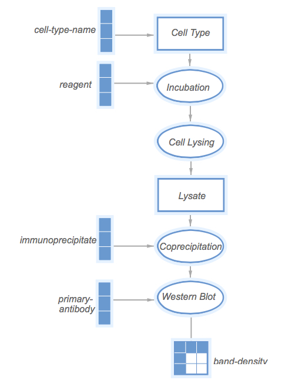
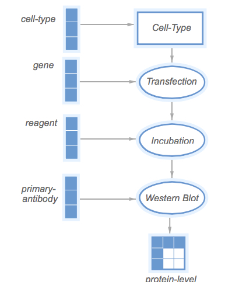

Here we describe an annotation study of KEfED models for five papers describing Coprecipitation studies pertaining to the Ras pathway.
From the 71 "open access" pmids, there are 1716 datums. 24 have Hras, Braf, Raf1 or Rac1 as subject.
These come from 8 papers: [16492808, 11448999, 11777939, 12515821, 19050761, 20929976, 16520382, 12876277]
Of these, 5 papers containing at least one coprecipitation study; we use these as the initial basis of this small-scale study.
Click for ZIP file of PDF, PMC XML + TXT files
We used simple scripts to query the PL Datum databases about the papers implicated in this short annotation study. We now use this repo as a lab notebook. See src/main/java/_02_rasSpecificPapers/S02_ReadPmidsFiguresAssays.java within the master branch.
Querying the PL database for assays revealed this file: pmids_figs_assays.txt
Querying the PL database for datum objects revealed this file: pmids_figs_datums.txt
Note that these assay types are documented in the Pathway Logic database here: http://pl.csl.sri.com/CurationNotebook/pages/_Assays.html
Initially, we attempted to model each type of assay as described within Pathway Logic assay types, as shown for these two assay types shown below:
KEfED Model [JSON] 
Note that
pmid:11777939-Fig-4bhas the assay set toGTP-assoc[BDPD]. Probably a data-typo. What does 'BDPD' stand for?
KEfED Model [JSON]

However, when we looked in detail at the papers experiments, we were trying to find KEfED versions of the basic PL types. Studies that detect coprecipitation use subtly different specific technical motifs at the level of KEfED models. We therefore started examining specific experiments in depth for a single paper: Innocenti et al. 2002: 11777939 and started to attempt to elaborate experimental motifs in greater detail.
We need to link the text from the Figure Legend and Methods Section to the KEfED template / PL Assay type and the text from the results section that actually describe the main findings to the PL Datum objects and the KEfED experiment.
This paper has a total of 18 experiments. Interestingly, there is not a one-to-one correspondence between the assays described in the Pathway Logic database, the KEfED models we've curated and the precise delineation of fragments in the results section. The authors occasionally describe more than one experiment in a single sentence. A single experiment may similarly provide more than one datum from more than one assay type (or even, a given experiment yields no PL datum objects at all). This reflects some of the differences between the KEfED modeling methodology and the PL curation approach.
| Expt | Pathway Logic Assay | KEfED Model Name | Fragment | |
| 1A | KO_Transfect_IP_WB | 1A | ||
| 1B | copptby[WB] | KO_Transfect_IP_WB | 1B | |
| 1C | copptby[WB] | IP_Competition_WB | 1C | |
| 2A | Map_Complex_Binding | 2, 2A | ||
| 2BC | In_Vitro_Competitive_Binding_assay | 2, 2BCD+3AB | ||
| 3A | Transfect_IP(fragment)_WB | 2, 2BCD+3AB | ||
| 3B | copptby[WB] | Transfect_IP_WB | 2, 2BCD+3AB | |
| 4A | copptby[WB] | Tfx_Incubate_IP_WB | 4ABCD | |
| 4B | GTP-association[BD | 2Tfx_Incubate_IP_WB | 4ABCD | |
| 5A | GTP-association[BD | IP_WB | 5, 5A | |
| 5B | 2Tfx_IP_WB | 5, 5B | ||
| 5C | Retroviral_Ras_GTP | 5, 5C | ||
| 6 | 2Tfx_fix+stain_score | 6 | ||
| 7A | copptby[WB] | 3Tfx_IP_WB | 7AB | |
| 7B | IVGefA(Rac1)[3H-GD | 3Tfx_IP_ActivityAssay | 7AB | |
| 7C | snaggedby[WB] | Incubate_Competition_WB | 7C | |
| 8A | copptby[WB] | Incubate_IP_WB_MobilityShift | 8, 8AB | |
| 8B | copptby[WB] + phos[ | TimedIncubation_IP_WB_MobilityShift | 8, 8AB | |
| 8C | copptby[WB] | Mutate_Tfx_Incubate_IP_WB | 8, 8C | |
| 8D | GTP-association[BD | TimedIncubation_affinityPrecipitation_Mobilit | 8, 8D | |
All ORCA-encoded fragments and KEfED models are included in this zipfile
ORCA-encoded fragments are provided in the brat format and the KEfED models and Data are provided as JSON files (conforming to the model for the original KEfED editor). They can be viewed in that system, but really need to be converted to our latest schema.
This shows a working pipeline for (A) delineating text using ORCA codes and (B) generating preliminary KEfED models and data tables for those experiments manually.
Here, we examine coprecipitation studies from the five papers in terms of their KEfED models.
I curated models for each of these experiments
| pmid | expt | type | comment | |
| 11777939 | 1b | KO_Transfect_IP_WB | ||
| 11777939 | 1c | IP_Competition_IB | ||
| 11777939 | 3b | Transfect_IP_WB | ||
| 11777939 | 4a | Tfx_Incubate_IP_WB | ||
| 11777939 | 5[tl] | IP_WB | ||
| 11777939 | 7a | 3Tfx_IP_WB | ||
| 11777939 | 8a | Incubate_IP_WB_MobilityShift | ||
| 11777939 | 8b | TimedIncubation_IP_WB_MobilityShift | ||
| 11777939 | 8c | Mutate_Tfx_Incubate_IP_WB | ||
| 12515821 | 1a | IP_WB | ||
| 12515821 | 1e | Transfect_IP_WB | ||
| 12515821 | 3a | 3Tfx_IP_WB | ||
| 12515821 | 3c | 3Tfx_IP_WB | ||
| 12515821 | S1b (not included) | not included | ||
| 16492808 | 1c | Transfect_Pulldown_WB | needs checking | |
| 16520382 | 2a | Mutate_3Tfx_IP_WB | ||
| 16520382 | 2b | Mutate_3Tfx_IP_WB | ||
| 16520382 | 2c | Transfect_IP_WB | ||
| 16520382 | 2d | Transfect_IP_WB | ||
| 16520382 | 2e | 2Tfx_IP_WB | ||
| 19050761 | 1c | Incubate_IP_WB | ||
| 19050761 | 5j | Incubate_IP_WB | ||
| 19050761 | 5n | Tfx_Incubate_IP_WB | ||
That makes 23 separate coprecipitation studies from 5 papers, using 13 different KEfED experiment types (note that these experimental types should be tightened up ontologically).
How should we continue here?
The focus of this work is now pushing on the KEfED model to demonstrate the technical process for performing extraction from text. To make this more concrete, we will build on the above work to focus on only simple coprecipitation studies, refine the definition of the types involved and then work on extending the corpus to provide enough training examples for Pradeep to be able to deliver a reading solution.
This includes the following experiments (to be extended as we proceed):
| pmid | expt | type |
| 11777939 | 1a | KOTag_IP_WB |
| 11777939 | 1b | KOTag_IP_WB |
| 11777939 | 3b | Transfect_IP_WB |
| 11777939 | 4a | Tfx_Incubate_IP_WB |
| 11777939 | 5[tl] | IP_WB |
| 11777939 | 7a | 3Tfx_IP_WB |
| 11777939 | 8c | Mutate_Tfx_Incubate_IP_WB |
| 12515821 | 1a | IP_WB |
| 12515821 | 1e | Transfect_IP_WB |
| 12515821 | 3a | 3Tfx_IP_WB |
| 12515821 | 3c | 3Tfx_IP_WB |
| 16520382 | 2a | Mutate_3Tfx_IP_WB |
| 16520382 | 2b | Mutate_3Tfx_IP_WB |
| 16520382 | 2c | Transfect_IP_WB |
| 16520382 | 2d | Transfect_IP_WB |
| 16520382 | 2e | 2Tfx_IP_WB |
| 19050761 | 1c | Incubate_IP_WB |
| 19050761 | 5j | Incubate_IP_WB |
| 19050761 | 5n | Tfx_Incubate_IP_WB |